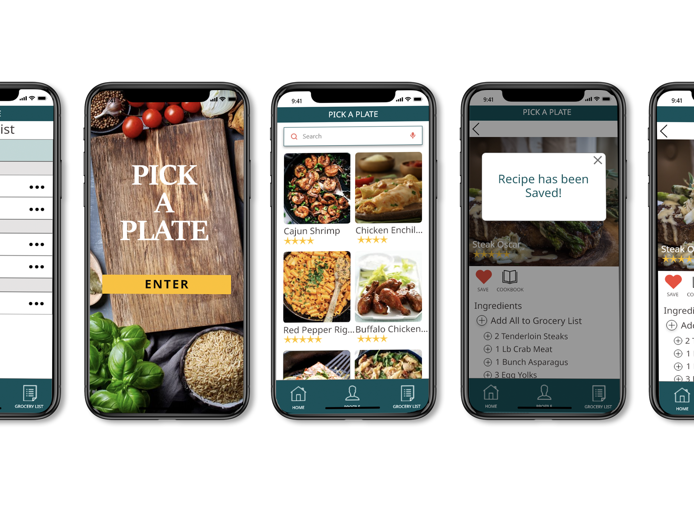
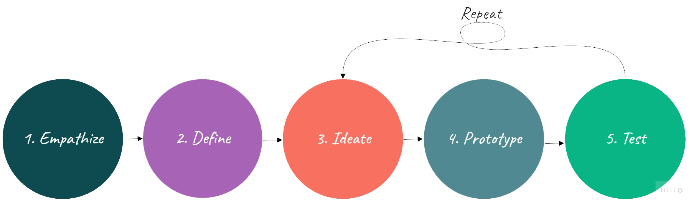
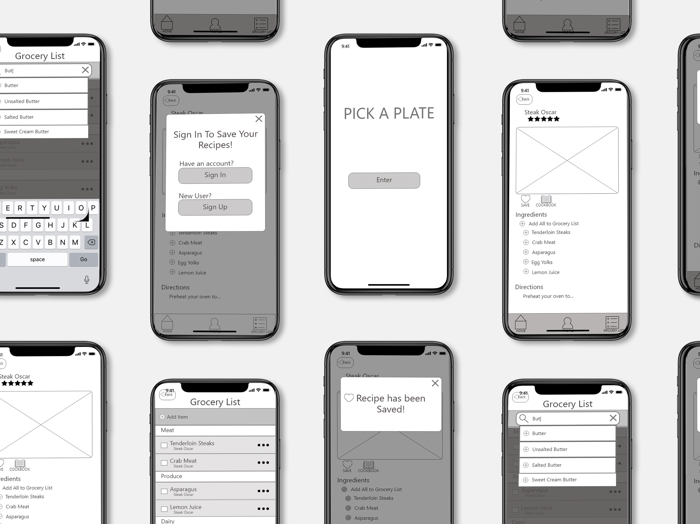

Pick a Plate
Team App Design
Recipe and Cooking App
Role: UX | UI Designer
During our research we discovered that most people love to, and want to cook at home with their friends and families most days. However, the time it takes to narrow down recipes that work for everyone’s likes, dislikes, and allergies is too time consuming.
How might we provide a simple planning process that encourages and assist users to get in the kitchen more and enjoy cooking.
We believe that by providing a simple, time efficient, planning process for our users, who want to cook more, will assist them in planning healthy budget friendly meal options that their families can all enjoy together.



Hypothesis:
We believe that people are frustrated by the time and effort spent deciding on and planning out what to cook on a daily basis. We think that by creating this app we will make the decision and planning process of cooking more efficient and enjoyable for those frustrated users.
The first step in proving this hypothesis was to interview and survey qualifying subjects and learn their behaviors and patterns when it comes to cooking
We analyzed these finding using an Affinity Diagram.
An overwhelming amount of users let us know that our hypothesis was on the right track. Most subjects want to cook almost everyday at home with friends and family. However, the time and effort it taks to plan those meals is too complicated and time consuming to do so.
We analyzed these finding using an Affinity Diagram.
An overwhelming amount of users let us know that our hypothesis was on the right track. Most subjects want to cook almost everyday at home with friends and family. However, the time and effort it taks to plan those meals is too complicated and time consuming to do so.

This data helped develop Pick a Plate's target user, Jason McDowell.

User Insights:
Jason needs an easier way to plan healthy, budget friendly meal options that his family can all enjoy together.
During our research we discovered that most people love to cook, and want to cook at home with their friends and families most days. However, the time it takes to narrow down recipes that work for everyone’s likes, dislikes, and allergies is too time consuming.
How might we provide a simple planning process that encourages and assist user to get in the kitchen more and enjoy cooking.
Problem Statement
We believe that by providing a simple, time efficient, planning process for our users, who want to cook more, will assist them in planning healthy budget friendly meal options that their families can all enjoy together.

User Scenarios and Storyboards helped guide the design process while keeping the user in mind.
We then conducted research on what features were most important in achieving Pick a Plate's goals.
Competetor Analysis
Feature Brainstorming
Prioritizing Features

We determined that the priority features needed for this app would be recipe search and browse feautres with images of the completed dishes, an option to save recipes items to a grocery list, and a step by step cooking instruction feature.

With a clear idea of what feautures are neccessary we created a user flow. This tells us how the user will move throughout the site.
The UI Design process began with sketches. This makes an easy edit process but allows us to quickly test our features impact on the user.

Our team then produced low and mid fidelity mockups for user testing.


Our testing plan consisted of three scenarios. Each User would complete certain task within each scenario.
Based on findings we concluded that our users really needed larger images and buttons, and wanted a more detailed grocery list.
We completed some accessibilty and color testing then created a UI Style Guide. We applied our style guide and iterations to create the final product.